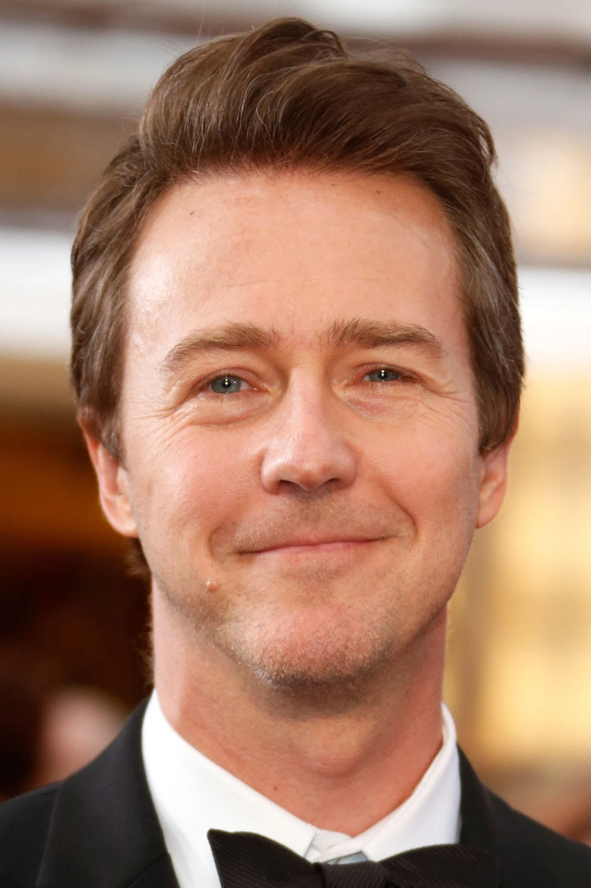
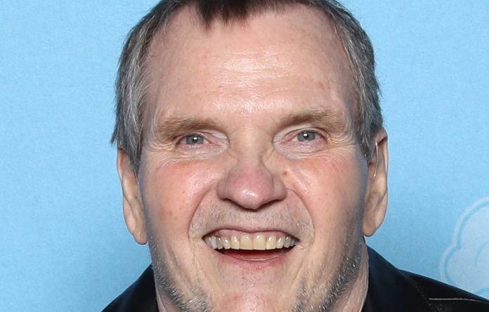

Edward Norton
Edward Harrison Norton é um ator, produtor e cineasta norte-americano. Conseguiu o estrelato ao atuar em Primal Fear. Norton já foi três vezes indicado ao Óscar de Melhor Ator e Melhor Ator Coadjuvante por Primal Fear, American History X e Birdman or.
Nascimento: 18 de agosto de 1969 (idade 54 anos), Boston, Massachusetts, EUA
Indicações: Oscar de Melhor Ator e etc...
Cônjuge: Shauna Robertson (desde 2012)
Irmãos: Molly Norton, Jim Norton
Brad Pitt

William Bradley Pitt, mais conhecido como Brad Pitt, é um ator e produtor norte-americano. É vencedor de diversos prêmios, dentre os quais dois Oscars, dois Globos de Ouro, dois Screen Actors Guild e um BAFTA por atuação, e um Oscar, um BAFTA e um Emmy como produtor; é citado um dos mais bem pagos atores de Hollywood.
Nascimento: 18 de dezembro de 1963 (idade 60 anos), Shawnee, Oklahoma, EUA
Filhos: Shiloh Jolie-Pitt, Pax Thien Jolie-Pitt, Zahara Jolie-Pitt, Maddox Jolie-Pitt
Cônjuge: Angelina Jolie (de 2014 a 2019), Jennifer Aniston (de 2000 a 2005)
Irmãos: Doug Pitt, Julie Neal Pitt
Helena Bonham Carter

Helena Bonham Carter, é uma atriz britânica. Ela já recebeu diversos prêmios ao longo de sua carreira, incluindo um BAFTA de melhor atriz coadjuvante, um Emmy Internacional e dois SAG Awards.
Nascimento: 26 de maio de 1966 (idade 57 anos), Islington, Londres, Reino Unido
Indicações: Prêmio BAFTA de Cinema: Melhor Atriz Coadjuvante e etc...
Filhos: Nell Burton, Billy Raymond Burton
Pais: Elena Propper de Callejón, Raymond Bonham Carter
Jared Leto
Jared Joseph Leto é um ator, diretor, cantor e compositor norte-americano.
Nascimento: 26 de dezembro de 1971 (idade 52 anos), Bossier City, Luisiana, EUA
Irmãos: Shannon Leto, Mateo Leto, Jamie Leto, Matthias Bryant
Grupo musical: Thirty Seconds to Mars (Desde 1998)
Prêmios: Prêmio NME para Homem Mais Sexy e etc...
Pais: Constance Leto, Carl Leto, Anthony L. Bryant
Holt McCallany
Traduzido do inglês-Holt McCallany é um ator americano. Ele é conhecido por interpretar o agente especial do FBI Bill Tench na série Mindhunter e teve papéis principais e coadjuvantes em várias séries de televisão e filmes, incluindo Lights Out, Fight Club, Three Kings, Shot Caller, Wrath of Man, Nightmare Alley e The Garra de Ferro.
Nascimento: 3 de setembro de 1963 (idade 60 anos), Nova Iorque, Nova York, EUA
Irmãos: Michael McAloney Jr.
Pais: Julie Wilson, Michael McAloney
Meat Loaf
Meat Loaf, nome artístico de Michael Lee Aday, foi um músico, cantor, produtor e ator norte-americano. Ficou conhecido pelo seu álbum Bat Out of Hell e por muitas canções que fizeram parte de bandas sonoras de filmes.